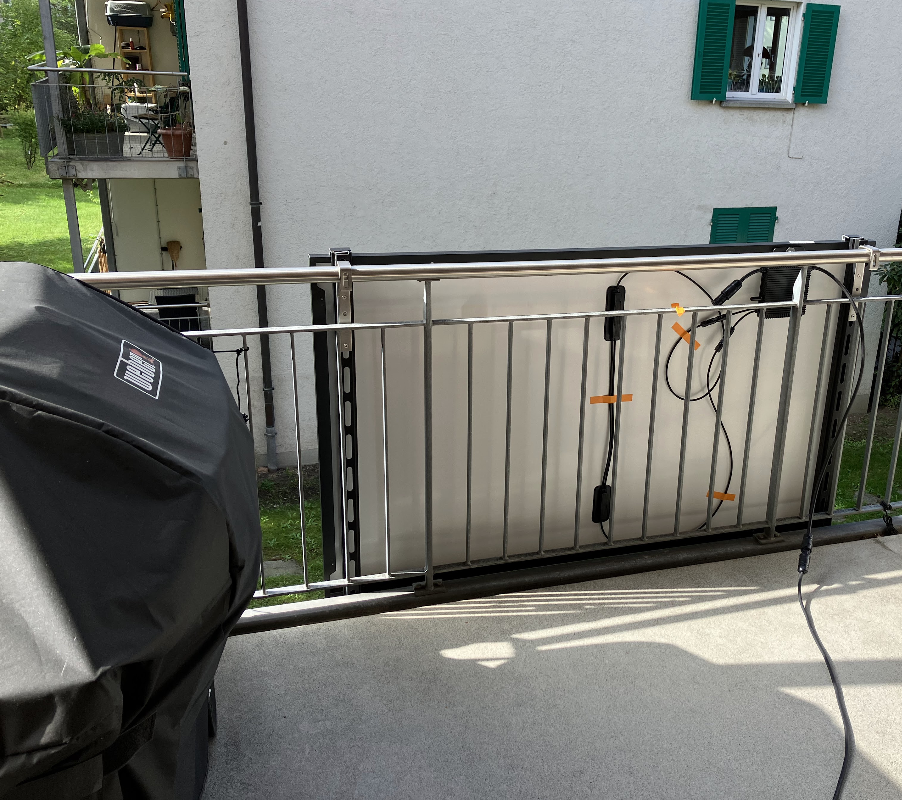
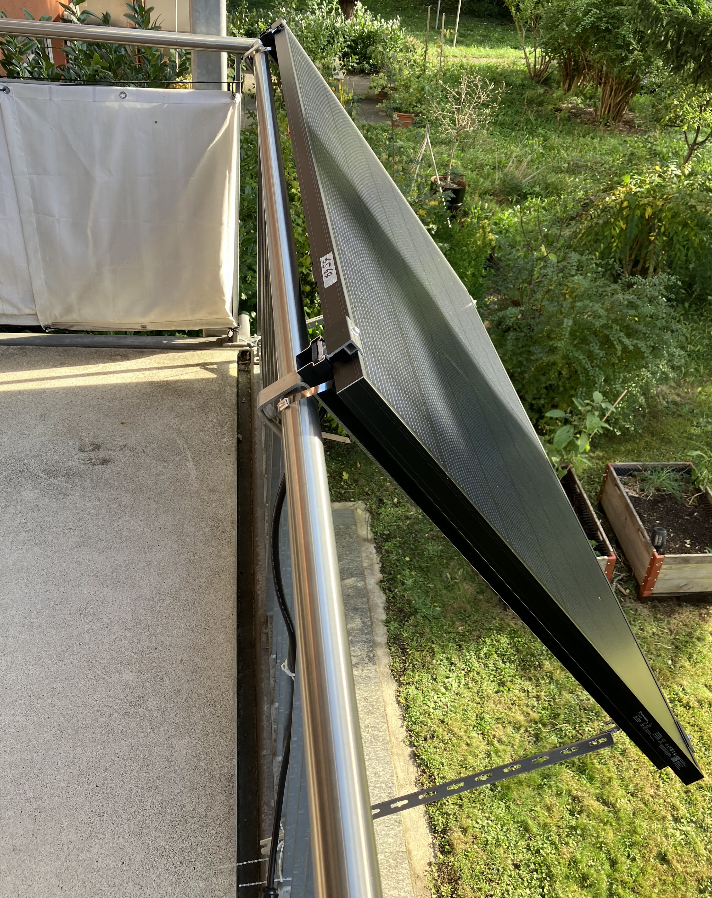
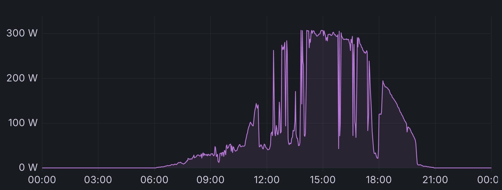
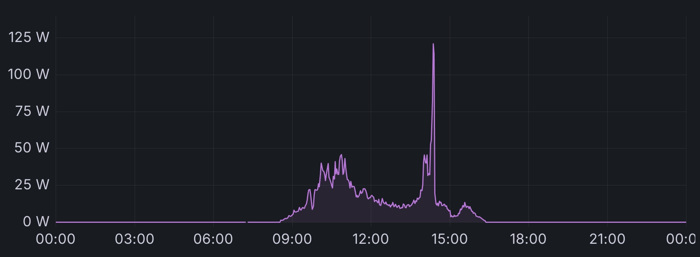
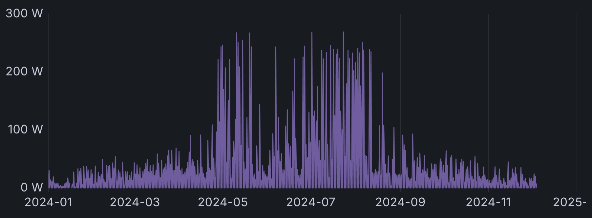

Table of contents
A year ago, I got a solar panel for my balcony — an easy way to vote with your wallet to convert more of the world’s energy usage to solar power. That was a great decision and I would recommend everyone get a solar panel (or two)!
It’s called plug-in solar panel because you can just plug it in
In my experience, many people are surprised about the basics of how power works: You do not need to connect devices to a battery in order to enjoy solar power. You can just plug in the solar panel into your household electricity setup. Any of your consumers (like a TV, or electric cooktop) will now use the power that your solar panel produces before consuming power from the grid.
Here’s the panel I have (Weber barbecue for scale). As you can see, the panel is not yet mounted at an angle, just hung over the balcony. The black box at the back of the panel is the inverter (“Wechselrichter”). You connect the panel on one side and get electricity out the other side.

Which solar panel to buy?
There are two big questions to answer when chosing a solar panel: what peak capacity should your panel(s) have and which company / seller do you buy from?
Regarding panel capacity: When I look at my energy usage, I see about 100 watts of baseline load. This includes always-on servers and other home automation devices. During working hours, running a PC and (power-hungry) monitor adds another 100 watts or so. Around noon, there is quite a spike in usage when cooking with my induction cooktop.
Hence, I figured a plug & play solar panel with the smallest size of 385 Wp would be well equipped to cover baseline usage, compared to the next bigger unit with 780 Wp, which seems oversized for my usage. Note that a peak capacity of 385 Wp will not necessarily mean that you will measure 380W of output. I did repeatedly measure energy production exceeding 300W.
Regarding the company, the best offer I found in Switzerland was a small company called erneuer.bar, which means “renewable” in German. They ship the panels with barely any packaging in fully electric vehicles and their offer is eligible for the topten bonus program from EWZ, meaning you’ll get back 200 CHF if you fill in a form.
The specific model I ordered was called “385 Wp Plug & Play Solar (DE)”. Here’s the bill:
| Produkt | Preis |
|---|---|
| 385 Wp Plug & Play Solar (DE) | CHF 520.00 |
| Mounting kit: balcony, 1 panel | CHF 75.00 |
| Pre-mount: mounting kit balcony | CHF 60.00 |
| WiFi measurement myStrom | CHF 55.00 |
| Shipping | CHF 68.00 |
| Total | CHF 778.00 |
Of course, you can save some money in various ways. For example, the measurement device and pre-mount option are both not required, but convenient. Similarly, you can probably find solar panels for cheaper, but the offer that erneuer.bar has put together truly is very convenient and works well, and to me that’s worth some money.
One mistake I made when ordering is selecting a 5m cable. It turned out I needed a 10m cable, so I recommend you measure better than I did (or just select the longer cable). On the plus side, customer service was excellent: I quickly received an email response and could just send back my cable in exchange for a new one.
Amortization? Who cares!
Many people seem to consider only the financial aspect of buying a solar panel and calculate when the solar panel will have paid for itself. I don’t care. My goal is to convert more energy usage to green energy, not to save money.
Similarly, some people install batteries so that they can use “their” energy for themselves, in case the solar panel produces more than they use at that moment. I couldn’t care less who uses the energy I produce — as long as it’s green energy, anyone is welcome to consume it.
(Of course I understand these questions become more important the larger a solar installation gets. But we’re talking about one balcony and one solar panel (or two) covering someone’s baseline residential household electricity load. Don’t overthink it!)
Requirement: balcony power socket
Aside from having a balcony, there is only one hard requirement: you need a power socket.
This requirement is either trivially fulfilled if you already have an outdoor power socket on your balcony (lucky you!), or might turn out to be the most involved part of the project. Either way, because an electrician needs to install power sockets, all you can do is get permission from your landlord and make an appointment with your electrician of choice.
In terms of cost, you will probably spend a few hundred bucks, depending on your area’s cost of living. A good idea that did not occur to me back then: Ask around in your house if any neighbors would be interested in getting a balcony power socket, too, and do it all in one go (for cheaper).
Bureaucracy
One can easily find stories online about electricity providers and landlords not permitting the installation of solar panels for… rather questionable reasons. For example, some claimed that solar panels could overload the house electricity infrastructure! A drastic-sounding claim, but nonsense in practice. Luckily, law makers are recognizing this and are removing barriers.
Electricity provider and the law
In Switzerland 🇨🇭, you can connect panels producing up to 600W without an electrician, but you need to notify your electricity provider.
In Germany 🇩🇪, you can connect panels producing up to 800W (as of May 16th 2024) without an electrician, but you need to register with the Bundesnetzagentur.
Be sure to check your country’s laws and your electricity provider’s rules and processes.
Landlord and neighbors
In Switzerland 🇨🇭, you need to ask your landlord for permission because if your solar panel were to fall down from the balcony, the landlord would be liable. Usually, the landlord insists on proper mounting and the tenant taking over liability. In my case, the landlord also asked me to ensure the neighbors wouldn’t mind. I put up a letter, nobody complained, the landlord accepted.
In Germany 🇩🇪, you do need to ask your landlord for permission, but the landlord pretty much has to agree (as of October 17th 2024). The question is not “if”, but “how” the landlord wants you to install the solar panel.
Optimizing the installation angle
Earlier I wrote that you can just hang the solar panel onto your balcony and plug it in. While this is true, there is one factor that is worth optimizing (as time permits): the installation angle.
If you want more details about the physics background and various considerations that go into chasing the optimal angle, check out these (German) articles about optimizing the installation angle (at Golem) or sizing solar installations (at Heise). I’ll summarize: the angle is important and can result in twice as much energy production! Any angle is usually better than no angle.
In my case, I first “installed” the solar panel (no angle) at 2023-09-30.
Then, about a month later, I installed it at an angle at 2023-10-28.

I unfortunately don’t have a great before/after graph because after I installed the proper angle mount, there were almost no sunny days.
Instead, I will show you data from a comparable time range (early October) in 2023 (before mounting the panel at an angle) and in 2024 (with a properly mounted panel). As you can see, the difference is not that huge, but clearly visible: without an angle mount, I could never exceed 300 Wh per day. With a proper mount, a number of days exceed 300 Wh:
| 1st | 2nd | 3rd | 4th | 5th | 6th | 7th | 8th | 9th | 10th | |
|---|---|---|---|---|---|---|---|---|---|---|
| 2023 🌞 Wh | 133 | 268 | 262 | 208 | 271 | 255 | 274 | 277 | 275 | 194 |
| 2024 🌞 Wh | 529 | 119 | 246 | 205 | 160 | 324 | 265 | 335 | 73 | 444 |
How much electricity does my panel generate?
The exact electricity production numbers depend on how much sun ends up on the solar panel. This in turn depends on the weather and how obstructed the solar panel is (neighbors, trees, …).
I like measuring things, so I will share some measurements to give you a rough idea. But note that measuring your solar panel is strictly optional.
On the best recorded day, my panel produced about 1.680 kWh of energy:

The missing parts before 14:00 are caused by the neighbor’s house blocking the sun.
Now, compare this best case with the worst case, a January day with little sun (< 50 Wh):

Let’s zoom out a bit and consider an entire year instead.
In 2024, the panel produced over 177 kWh so far, or, averaged to the daily value, ≈0.5 kWh/day:

Or, in numeric form (all numbers in kWh):
| Jan | Feb | Mar | Apr | May | Jun | Jul | Aug | Sep | Oct | Nov | Dec |
|---|---|---|---|---|---|---|---|---|---|---|---|
| 2.9 | 6.6 | 10.9 | 18.4 | 29.1 | 27.7 | 37.6 | 22.1 | 12.0 | 6.5 | 3.3 | n/a |
Conclusion
A solar panel is a great project to make incremental progress on. It’s just 3 to 4 simple steps, each of which is valuable on its own:
- Check with your landlord that installing an outdoor power socket and solar panel is okay.
- Even if you personally do not go any further with your project, you can share the result with your neighbors, who might…
- Order an outdoor power socket from your (or your landlord’s) preferred electrician.
- Power will come in handy for lighting when spending summer evenings on the balcony.
- Order a solar panel and plug it in.
- Optional, but recommended: Optimize the mounting angle later.
That’s it! Come on, get started right away 🌞
I run a blog since 2005, spreading knowledge and experience for over 20 years! :)
If you want to support my work, you can buy me a coffee.
Thank you for your support! ❤️